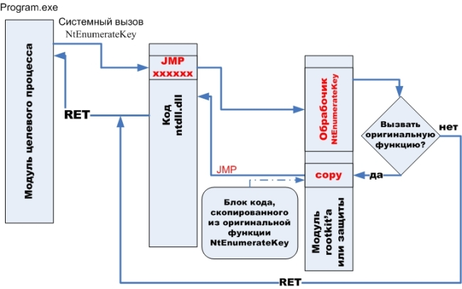

...вариантов, сука, ноль:
кто-то предал, кто-то свой.
Агата Кристи - "Подвиг"
В своей статье "Анализ splice-перехватов функций системных вызов" я уже описывал применение дизассемблера для анализа detour'ов. Я решил продолжить, и в данной статье я хочу описать способ противодействия перехватам в системной библиотеке. Обходить будем известный "учебный" rootkit Hacker Defender. Программа использует 32-х битный дизассемблер длин (LDE v1.05), который является ранней версией XDE - дизассемблера от Z0mbie. Противодействовать будет из user mod'а, не прибегая к драйверам.
Hacker Defender ставит detour'ы на целый ряд системных вызовов из ntdll.dll, защищая свои процессы, файлы и ключи реестра. Запускаем утилиту анализа SplChk и наблюдаем обнаруженные splice-перехваты:
Рассмотрим основы функционирования splice-перехватов. Обобщенная схема работы такого рода перехвата показана на рисунке ниже:

Основной особенностью splice-перехвата, которого так же часто называют detour, заключается в том, что при inject'е такого перехвата, часть кода перехватываемой функции безвозвратно модифицируется. Самый распространенный способ - установка перехвата в начало функции, записью 5-ти байтовой инструкции безусловного перехода jmp. Если перехват ориентирован на стандартные MicroSoft'овские библиотеки, то необходимость дизассемблера отпадает. Начало экспортируемых C-функций, как правило, совпадает на всех версиях ОС (необходимо только учитывать Hotpatching на современных версиях). Но дизассемблер может понадобиться в случае, если, например, нужно "спрятать" перехват глубже в функции, пропустив несколько команд.
Алгоритм установки перехвата в начало функции с использованием дизассемблера приблизительно таков:
- 1. дизассемблируем очередную инструкцию от начала функции
- 2. копируем байт-код в свой буфер (на рисунке это блок copy)
- 3. если длина скопированного кода меньше 5-ти байт (long jump), то возвращается к п.1
- 4. запоминаем адрес оригинального кода, с которого необходимо будет возобновить исполнение перехваченной функции: адрес последней скопированной инструкции + ее длина
- 5. в copy-буфере, после скопированного байт-кода, формируем команду jmp на адрес, сформированный в п.4
- 6. вписываем в начало функции jmp на адрес своего обработчика перехвата
Перехват установлен. Теперь, если мы захотим в перехвате отдать управление оригинальной функции, то просто нужно передать управление на блок copy. В реальности, алгоритм стоит усложнить обработкой относительных смещений в скопированном байт-коде.
Теперь, собственно, мы подошли к тому, что бы организовать противодействие перехватам в системных библиотеках. Сразу понятно, что при реализации, нам будет необходимо работать с PE-модулями. Что бы не писать еще один "велосипед", я решил использовать библиотеку Open NT Native Template Library (ONTL).
Суть предлагаемого мной обхода в следующем: загрузка модуля системной библиотеки "вручную". То есть необходимо вычитать заголовок файла, выделить памяти для всего модуля и загрузить по - секциям содержимое PE-образа. Для этого я написал класс TRemappedImage, который успешно прошел тестирование на ntdll.dll и ole32.dll. После загрузки данных и кода из файла в выделенный буфер, собственно и наступает черед работы ONTL. Для начала необходимо обработать reloc'и загруженного образа. У класса ntl::pe::image есть метод, который именно для этого и предназначен: relocate(). Но он не подходит для нашей задачи потому, что нам нужно "динамически" обрабатывать дельту смещения reloc'а. Поэтому я отнаследовался от класса ntl::pe::image и написал свой TImageReloc, в котором практически скопировал функцию релокации:
// потомок ntl::pe::image с кастомизированным методом релоцирования
class TImageReloc : public image {
public:
template <class TDeltaFunc>
bool relocate_f(TDeltaFunc &Func)
{
const data_directory * const reloc_dir =
get_data_directory(data_directory::basereloc_table);
if ( ! reloc_dir || ! reloc_dir->VirtualAddress ) return false;
const base_relocation * fixups = va<base_relocation*>(
reloc_dir->VirtualAddress);
const uintptr_t end = va(reloc_dir->VirtualAddress + reloc_dir->Size);
while ( reinterpret_cast<uintptr_t>(fixups) < end )
{
const uintptr_t addr = va(fixups->VirtualAddress);
const uintptr_t end = fixups->SizeOfBlock
+ reinterpret_cast<uintptr_t>(fixups);
const base_relocation::entry_t * entry = &fixups->entry[0];
for ( ; reinterpret_cast<uintptr_t>(entry) < end; ++entry )
switch ( entry->Type )
{
case base_relocation::type32::highlow:
{
uint32_t * vaddr = reinterpret_cast<uint32_t *>(
addr + entry->Offset);
const ptrdiff_t delta = Func(
rva(reinterpret_cast<uintptr_t>(vaddr)) );
*vaddr += static_cast<uint32_t>(delta);
}
break;
default:
break;
}
fixups = reinterpret_cast<const base_relocation *>(entry);
}
return true;
}
};
Далее нужно обработать импорты, вызовом ntl::pe::image::bind_import. Все эти не нехитрые манипуляции производит написанный мною метод TRemappedImage::ReadImage(...). Код всего класса TRemappedImage, как я надеюсь, написан достаточно наглядно, и описывать его в деталях не имеет смысла. Поэтому можно просто скачать, посмотреть исходники и работу утилиты KeyView.
Проверяем результат. Запускаем собранную утилиту без противодействия splice-перехватам в ntdll.dll:
Результат работы:
И с загрузкой второй копии ntdll.dll:
Результат работы:
Как видим, скрытые ключи прекрасно отображаются. Минусом данного подхода является ситуация, когда функция из загруженного вручную модуля передает управление по адресу некоторого callback'а, который формируется в секции данных, доступной на запись.
Утилиту с исходными кодами можно скачать здесь.
ΞρεΤΙκ